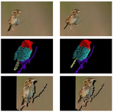
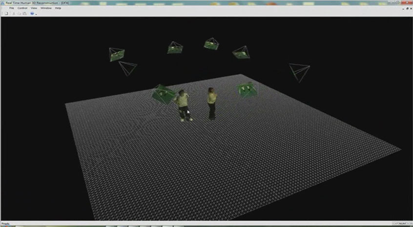
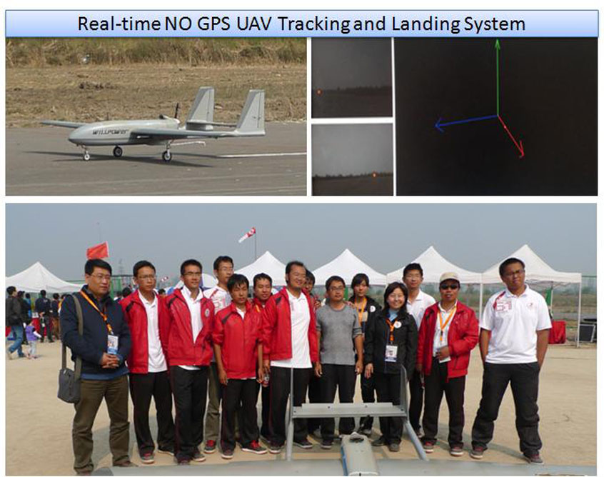
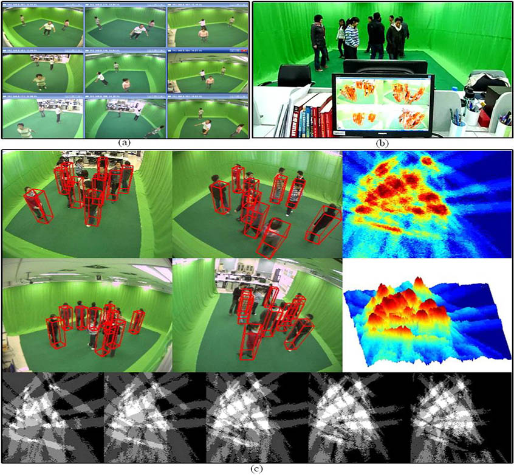

2026
Luce: Relightable Gaussians for 3D Asset Generation
Generating relightable 3D assets from a single image using multimodal Gaussians that jointly represent geometry and physically based materials, preserving fine surface details.
Staff Engineer / Apple
I work on 3D computer vision and machine learning, with a particular interest in understanding the geometry and motion of the world from images and video.
My research explores how to recover the structure and motion of 3D scenes from images and monocular video, alongside work in optimization, tracking, and computational imaging.
Generating relightable 3D assets from a single image using multimodal Gaussians that jointly represent geometry and physically based materials, preserving fine surface details.
Joint reasoning about shape, motion, shading, and specularities improves the quality and robustness of dynamic 3D reconstruction from a single camera.
* Equal contribution.
A unified approach to tracking and reconstructing dynamic objects while modeling both specularities and shading.
Extended by the 2017 preprint listed above.
A linear programming formulation that uses pairwise matches simultaneously to determine the global position of each puzzle piece.
Capturing the dense geometry of complex, deforming shapes using a single RGB camera and direct photometric optimization.
An unsupervised approach that segments a video into objects and reconstructs their 3D geometry, handling rigid, articulated, and non-rigid motion.
* Equal contribution.
Depth-free, all-in-focus synthetic aperture imaging based on light-field visibility analysis.
Synthetic aperture imaging for automatic focusing and observing moving objects through occlusion in cluttered scenes.
Automatic focusing depth estimation using loops in a camera array.
A hybrid synthetic aperture imaging model for detecting and tracking people in crowded scenes with severe occlusion.
No publications match. Try another topic or search term.

Reconstructing dense, detailed 3D shapes from a single camera: from segmenting dynamic scenes into objects to tracking the deformation of non-rigid surfaces.
Read thesisA few systems from my earlier work, bringing geometric vision into real-time applications.

3D reconstructionA multi-camera reconstruction system that shares vertices during voxel splitting. The original system achieved 10 frames per second with eight cameras on an Intel i7-950 PC with 4 GB of RAM.
Watch demo
RoboticsA real-time landing system using a visible high-brightness flashlight for localization at distances up to 400 metres, including strong lighting conditions. Demonstrated autonomous landings without differential GPS and participated in the AVIC Cup International UAV Innovation Grand Prix.
Watch demo
Computational imagingA real-time system combining multi-camera detection, synthetic aperture imaging, and multi-person tracking. A hybrid imaging model helps locate and observe people in challenging, occluded scenes. Research published at CVPR 2011.
Watch demoBefore Apple, I worked on 3D vision at DJI. I completed my PhD at University College London, advised by Lourdes Agapito and Chris Russell. Earlier, I studied at Northwestern Polytechnical University, working with Yanning Zhang and Tao Yang.
My interests span geometric computer vision, machine learning, optimization, and deep learning, including dynamic scene reconstruction, multi-object detection and tracking, and synthetic aperture imaging.
View curriculum vitaeFor research and professional enquiries.